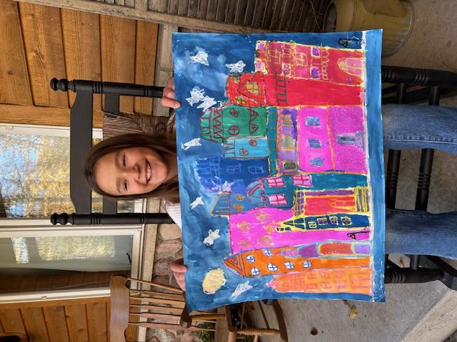
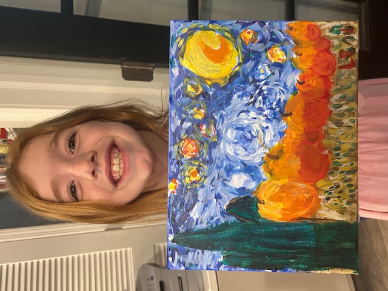
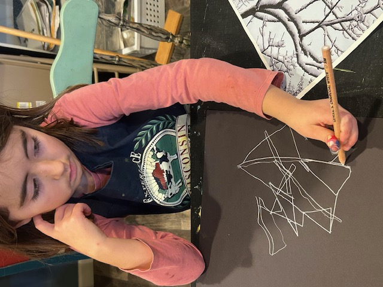
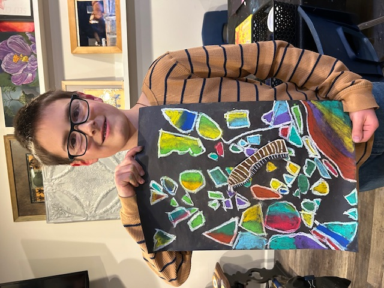
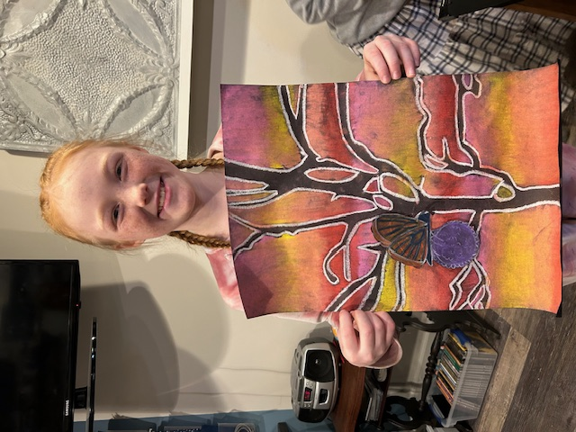
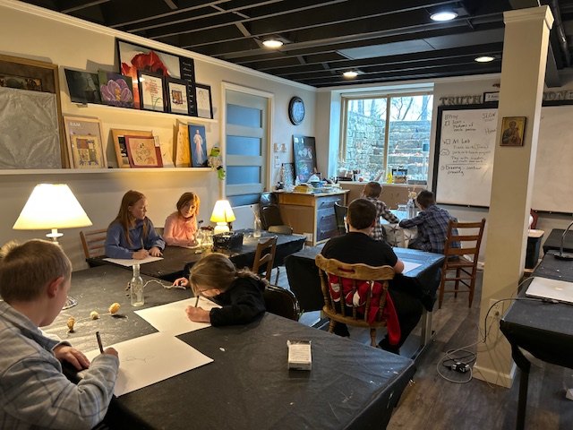
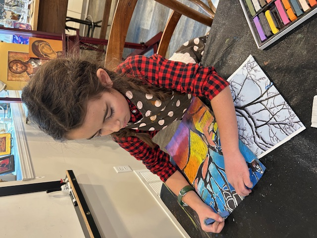

Why choose St. Joseph's Atelier?

Faith & Creativity Together
Every class begins with prayer and invites students to discover beauty, truth, and goodness through art. Students learn to observe carefully, create mindfully, and use their God-given gifts while growing in appreciation for God's creation.

Real Art Skills & Art History
Students study master artists such as Vincent Van Gogh, Georgia O'Keeffe, Henri Matisse, and Paul Cézanne while learning drawing, painting, color theory, composition, printmaking, and mixed media techniques. Every project encourages creativity rather than copying templates.

Learn from a Professional Artist & Educator
Classes are taught by Donna Zoller-Warner, a Bachelor of Fine Arts graduate and certified educator with experience teaching in Catholic, private, public, and homeschool settings. Her goal is to create a peaceful atmosphere where students can learn, explore, and grow with confidence.
Featured classes

Learn Real Artistic Skills
Students explore drawing, painting, printmaking, mixed media, color theory, composition, and more through hands-on projects inspired by master artists.

Create in a Peaceful Environment
Each class begins with prayer and encourages mindfulness, observation, patience, and gratitude while creating beautiful works of art.

Express Individual Creativity
Students are guided, not given templates. Every child develops confidence by creating original artwork that reflects their own ideas and imagination.
